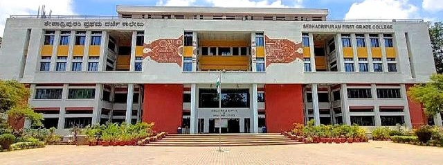
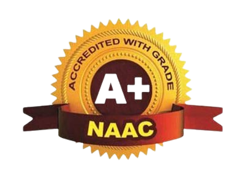

About Us
Seshadripuram Educational Trust (SET)

The Seshadripuram Educational Trust (SET) stands as a landmark of academic heritage in Karnataka, tracing its origins back to a modest primary school founded in 1930 by two visionary women, Smt. Anandamma and Smt. Seethamma. Over nearly a century, it has grown from a tiny two-room setup into a sprawling network of 34 institutions that serve approximately 24,500 students from kindergarten through to doctoral research. Headquartered in Bengaluru, the Trust operates on the democratic principle of being "by the people, for the people," prioritizing affordable, high-quality education for all socio-economic backgrounds. Beyond its impressive scale, SET is distinguished by its commitment to holistic development and global standards. Its institutions—ranging from prestigious commerce colleges to law schools and postgraduate centers—are supported by a dedicated faculty of over 1,500 staff members. The Trust has earned significant accolades, including the National Award for the Best NSS Unit, and maintains international collaborations with universities across the UK, USA, and Europe to ensure its students are globally competitive. By blending modern infrastructure with a deep-rooted sense of social responsibility, SET continues to be a driving force in shaping the intellectual and moral fabric of the nation.
Seshadripuram First Grade College (SFGC)
Seshadripuram First Grade College (SFGC), located in Yelahanka, Bengaluru, is a premier institution under the Seshadripuram Educational Trust that has been a cornerstone of higher education since its inception in 1992. Accredited with a prestigious NAAC A+ grade, the college is widely recognized for its academic rigor and holistic development approach, consistently ranking among the top private colleges in India by publications like India Today. It offers a diverse range of undergraduate and postgraduate programs, including popular courses like B.Com, BCA, BBA (with specialized streams like Aviation), B.Sc, and M.Com, all affiliated with Bengaluru City University. The campus is equipped with modern infrastructure, featuring state-of-the-art laboratories, a vast digital library, and a massive 1,000-seat auditorium that serves as a hub for cultural and academic events. Beyond the classroom, SFGC emphasizes social responsibility and leadership through its active NCC and NSS units, as well as dedicated research centers like the Gandhi Study Centre. With a strong focus on placement through its dedicated cell, the college bridges the gap between academic learning and industry requirements, making it a highly sought-after destination for students in Southern India.
IQAC (Internal Quality Assurance Cell)
The Internal Quality Assurance Cell (IQAC) of S.F.G.C is a task force comprising senior faculty members dedicated to maintaining and enhancing the quality of the institution. The primary mission of the IQAC is to develop a system for conscious, consistent, and catalytic improvement in quality and overall performance. It aims to make a significant and meaningful contribution towards academic excellence by formulating effective intervention strategies to enhance institutional performance. The IQAC works to optimize and integrate modern methods of teaching and learning, while also disseminating information on quality parameters and sharing research insights with other institutions. The cell is chaired by the Principal and includes members of the Trust and Heads of Departments as its core members. Since quality assurance and enhancement is an ongoing process, the IQAC regularly organizes workshops and seminars on quality-related themes. Additionally, the various academic and institutional programs have been systematically documented in the form of a Self-Study Report. At present, the IQAC is prepared to welcome an expert team for assessment and accreditation under the auspices of the National Assessment and Accreditation Council (NAAC), a statutory body of the University Grants Commission (UGC).
National Assessment and Accreditation Council (NAAC)
A top-tier institution accredited with an 'A+' Grade by NAAC in its 3rd cycle. Affiliated to Bengaluru City University and recognized under 2(f) & 12(B) of the UGC Act, it offers premier UG/PG programs in Commerce, Management, and Science with strong placements and industry partnerships same as SET SFGC etc.
About AICTE

The All India Council for Technical Education (AICTE) is India’s premier statutory body responsible for the strategic planning, regulation, and quality enhancement of the technical education system. Established in 1945 and later granted statutory status in 1987, it operates under the Ministry of Education to ensure that institutions offering programs in engineering, management, pharmacy, and architecture adhere to rigorous national standards. In 2026, AICTE has evolved beyond its traditional regulatory role to become a central "facilitator" of the Viksit Bharat @ 2047 vision, focusing heavily on industry-readiness and digital transformation. Key modern initiatives include the Project PRACTICE, which targets pedagogical reforms in 1,000 tier-2 and tier-3 colleges, and the mandatory integration of Artificial Intelligence across all engineering disciplines to ensure graduates are proficient in domain-specific AI applications. By managing national portals for internships, research fellowships, and the APAAR digital identity system, AICTE creates a unified ecosystem that bridges the gap between academic theory and global industrial requirements.
Indian Knowledge Systems (IKS)

The Indian Knowledge System (IKS) is a sophisticated and holistic framework of indigenous knowledge that has evolved over millennia, seamlessly blending the spiritual with the scientific. Unlike fragmented modern disciplines, IKS approaches subjects like mathematics, metallurgy, linguistics, and medicine as interconnected parts of a larger cosmic order. From the pioneering concept of zero and the decimal system to the surgical precision found in the Sushruta Samhita, these traditions emphasize empirical observation rooted in a sustainable worldview. By integrating ancient wisdom—such as the grammatical logic of Panini or the ecological harmony of traditional water harvesting—with contemporary needs, IKS offers a unique "Indian way" to solve global challenges like mental health and climate change. A Modern Resurgence Today, IKS is transitioning from historical texts to classroom curriculum through the National Education Policy (NEP) 2020. This movement aims to foster a "decolonized mind," encouraging students to apply traditional ethical frameworks and logic to modern fields like AI, sustainable architecture, and holistic wellness.
Seshadripuram Research Foundation (SRF)
Seshadripuram Research Foundation (SRF) is the research wing of Seshadripuram Educational Trust (SET), established to promote and encourage research among faculty and students of its Degree and Postgraduate institutions. SRF serves as a common platform for research activities across all institutions under the Trust and aims to strengthen academic excellence through quality research and consultancy. It functions as a recognized Ph.D. Research Centre and coordinates various research initiatives while motivating faculty members to undertake innovative research and consulting projects. The Foundation provides financial assistance to deserving research proposals based on merit and relevance, thereby supporting meaningful and socially responsible research. Through its Student Research Forum, SRF nurtures research aptitude and cultivates a culture of inquiry among students. By acting as an information provider, catalyst, facilitator, and support system for research aspirants, SRF contributes significantly to institutional development and societal progress, reinforcing the importance of research as a tool for empowerment and knowledge creation.
IKS Horizons 2025 (Conference)
The International Conference – IKS Horizons 2025, organized by the Seshadripuram Research Foundation (SRF) at Seshadripuram First Grade College (SFGC), Yelahanka, stood out as a prestigious academic gathering that celebrated the integration of the Indian Knowledge System (IKS) with contemporary global scholarship. The conference served as a vibrant platform for academicians, researchers, and practitioners to engage in meaningful discussions across disciplines including Science, Technology, Humanities, Commerce, and Management. The conference was graced by the distinguished presence of the Chief Guest, Dr. Anil D. Sahasrabudhe Chairman of NETF/ EC-NAAC & NBA /Former Chairman, AICTE., whose inaugural address set a strong intellectual tone for the event. The Chief Guest emphasized the relevance of Indian knowledge traditions in addressing present-day global challenges and highlighted the need for interdisciplinary research rooted in indigenous wisdom. The keynote insights inspired participants to explore innovative research pathways while preserving the richness of India’s intellectual heritage. IKS Horizons 2025 witnessed enthusiastic participation from over 250 delegates, featuring 120 research paper presentations and 80 poster presentations by scholars from reputed institutions across India and abroad. The sessions were marked by dynamic academic exchanges, thought-provoking presentations, and interactive discussions that enriched the research experience of all participants. The hybrid mode of the conference enabled broader outreach and inclusive participation. A major highlight of the conference was the launch of key academic initiatives, including the release of the e-conference proceedings, the introduction of a seshadripuram Global Journal Multilinguistic(SJGML) Research Journal, and the formal establishment of the IKS Forum at SFGC. These milestones reflect SRF’s continued commitment to promoting research excellence, fostering interdisciplinary collaboration, and strengthening the academic ecosystem. Through the successful organization of IKS Horizons 2025, the Seshadripuram Research Foundation reaffirmed its vision of nurturing research that harmoniously blends tradition with innovation. The conference laid a strong foundation for future scholarly collaborations and reinforced SRF’s role as a catalyst for knowledge creation and academic leadership.